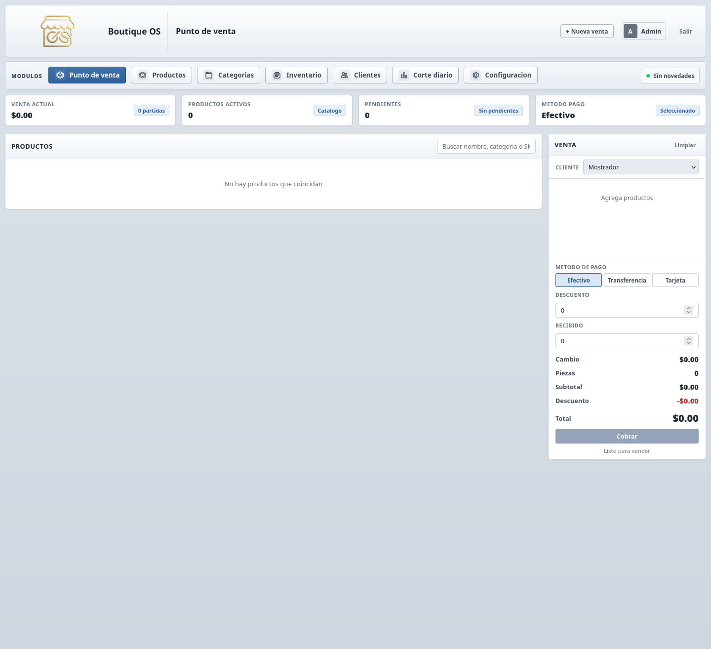
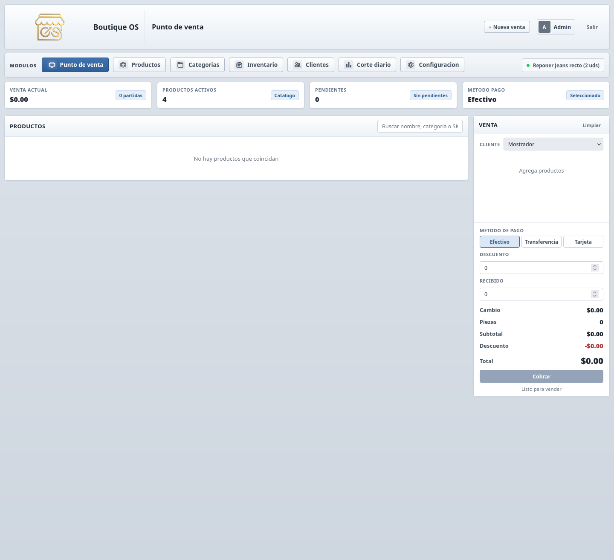
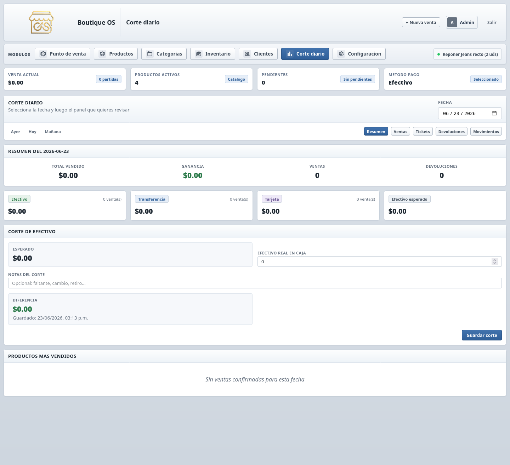

POS + inventario + clientes + reportes
Controla ventas, inventario y clientes desde un solo lugar.
BoutiqueOS ayuda a boutiques y tiendas de ropa a operar con mas orden: punto de venta agil, inventario actualizado, historial de clientes y reportes claros para tomar decisiones diarias.
Punto de venta rapido
Inventario y clientes centralizados
Reportes listos para operar
Activacion guiada despues del pago
Pago seguro por Stripe
Ruta clara hasta el sistema real
Soporte directo por WhatsApp
Boutique OS
Panel principal
A Admin
POS
Catalogo
Inventario
Clientes
Reportes
Settings
Vista ejecutiva
Hoy
Una vista simple para seguir ventas del dia, stock pendiente y el ritmo general del negocio sin perder tiempo navegando entre pantallas.
Operacion diaria
Activo
- Agregar productos al instante
- Cobro y ticket PDF
- Cliente asociado a la venta
Gestion comercial
Clave
- Clientes registrados
- Control de inventario
- Reportes para seguimiento
Valor real
No se vende por “verse bonito”, se vende por ordenar la operacion.
La promesa comercial correcta no es tecnologia por tecnologia. Es vender con menos friccion, entender mejor la tienda y tomar decisiones con mas claridad.
Menos apuntes sueltos y menos doble trabajo.
Ventas, clientes e inventario quedan conectados en el mismo flujo diario.
Sabes mejor que paso hoy sin perder tiempo.
El sistema deja mas claro el cierre del dia, productos criticos y ritmo de venta.
Menos intuicion ciega, mas control operativo.
Los reportes aterrizan mejor lo que conviene reponer, mover o seguir vendiendo.
Producto
Una plataforma pensada para boutiques que necesitan orden operativo.
BoutiqueOS concentra los procesos que mas se usan en tienda: registrar ventas, consultar existencias, revisar clientes y entender el estado del negocio con datos claros.
Interfaz clara
Un panel limpio y facil de leer para vender, consultar y revisar informacion sin friccion.
Todo en un mismo flujo
Ventas, catalogo, inventario, clientes y reportes conectados en una sola experiencia.
Base para escalar
Ideal para negocios que hoy necesitan control diario y despues quieren crecer con mas estructura.
Vista general
Recorrido comercial

Punto de venta
Vista de producto

Reportes
Vista de producto

Como funciona
Un flujo corto para vender con menos friccion.
La idea no es meter mas pasos, sino quitar desorden en la operacion diaria de la boutique.
Carga tu catalogo
Registra prendas, precios y stock inicial para tener base real desde el primer dia.
Vende y cobra rapido
Usa el POS para agregar productos, asociar cliente y cerrar tickets sin brincar de pantalla.
Revisa que paso hoy
Consulta reportes y movimientos para decidir reposicion, seguimiento y siguientes ventas.
Planes
Compra el plan base hoy y cobraremos por Stripe.
El objetivo no es solo venderte un sistema: es dejarte operando con orden, acceso claro y acompanamiento desde el arranque.
Plan Boutique
$499 / mes
- 1 sucursal
- Ventas, inventario y clientes
- Reportes y corte diario
- Soporte por WhatsApp
Pago seguro por Stripe. Este boton abre el checkout desde el backend.
Activacion guiada
Sin vueltas raras
Soporte directo
Plan Crecimiento
A medida
- Varias sucursales
- Usuarios y permisos
- Paneles por rol
- Implementacion personalizada
Cierre comercial
Compra clara, activacion clara y entrada clara al sistema.
Aqui se elimina la friccion comercial: el cliente entiende que compra, que recibe, cuanto tarda y como entra a operar sin quedarse en el limbo.
Acceso listo para vender con mas orden.
- 1 acceso base para tu boutique
- POS, inventario, clientes y reportes
- Configuracion inicial y acompanamiento de arranque
- Soporte directo por WhatsApp
El flujo sigue una ruta simple y profesional.
- Pagas por Stripe
- Se valida tu compra
- Se activa tu acceso
- Entras al sistema y empiezas a operar
Tu boutique ya vende, pero la operacion sigue desordenada.
Si hoy cobras, apuntas, corriges stock a mano o no tienes claro que paso en el dia, BoutiqueOS entra justo ahi: menos caos operativo y mas control real.
Resolver dudas antes de comprar
Promesa de arranque
La venta no termina en el pago: empieza en la activacion.
Una parte fuerte del cierre comercial es que el cliente entienda que no compra una caja cerrada. Compra una ruta clara para empezar a operar con orden.
Pagas
El checkout se hace por Stripe para que el cobro sea claro y profesional.
Se activa tu acceso
Se valida la compra y se prepara la entrada al sistema sin dejar al cliente en espera ciega.
Empiezas a operar
Con acceso listo, soporte y flujo guiado para que el arranque se sienta firme.
Confianza
Lo que una boutique espera sentir antes de comprar.
El cierre comercial no vive solo en el precio. Vive en la sensacion de control, claridad y acompanamiento que transmite el producto.
“Lo que mas nos serviria seria dejar de vender con desorden, tener claro el stock y revisar rapido que paso en el dia sin andar brincando entre notas.”Perfil ideal Boutique con operacion diaria y necesidad de control real.
Antes
- Ventas y stock por separado
- Seguimiento manual
- Poca claridad al cierre del dia
Despues
- Operacion centralizada
- Cliente, ticket e inventario conectados
- Reportes listos para decidir rapido
- “¿Y si no le entiendo?” El flujo de entrada y activacion esta pensado para llegar con claridad.
- “¿Y si me quedo sola despues de pagar?” El plan ya contempla seguimiento por WhatsApp.
- “¿Y si mi boutique crece?” Ya existe ruta para escalar a varias sucursales.
FAQ
Preguntas frecuentes sobre BoutiqueOS.
¿Como se realiza el pago?
El plan base se paga por Stripe con un enlace de cobro seguro. Despues del pago se agenda activacion y acceso.
¿Para que tipo de negocio esta pensado?
Esta orientado a boutiques y tiendas de ropa que necesitan vender rapido, controlar stock y tener mejor seguimiento de clientes.
¿Que pasa despues del pago?
Se confirma la compra, se configura tu acceso y se da seguimiento para dejar lista la operacion inicial.
¿Que beneficios resuelve en el dia a dia?
Reduce el desorden operativo, centraliza informacion clave y facilita revisar ventas, existencias y movimiento comercial desde un solo panel.
¿Por que no simplemente seguir con notas o Excel?
Porque cuando la boutique crece, los errores operativos cuestan mas: stock mal actualizado, ventas poco claras y seguimiento flojo de clientes. Aqui todo vive mas conectado.
¿Como se si este plan me conviene hoy?
Si ya vendes y el problema no es conseguir mas trabajo sino ordenar mejor la operacion diaria, este es justo el tipo de punto donde BoutiqueOS hace sentido.
Contacto
Habla directo si quieres resolver dudas antes de comprar.
Si quieres validar detalles, tiempos de activacion o el plan para varias sucursales, escribe por WhatsApp y lo revisamos directo.
Resolver dudas por WhatsApp
Respuesta directa para compra, activacion y seguimiento comercial.